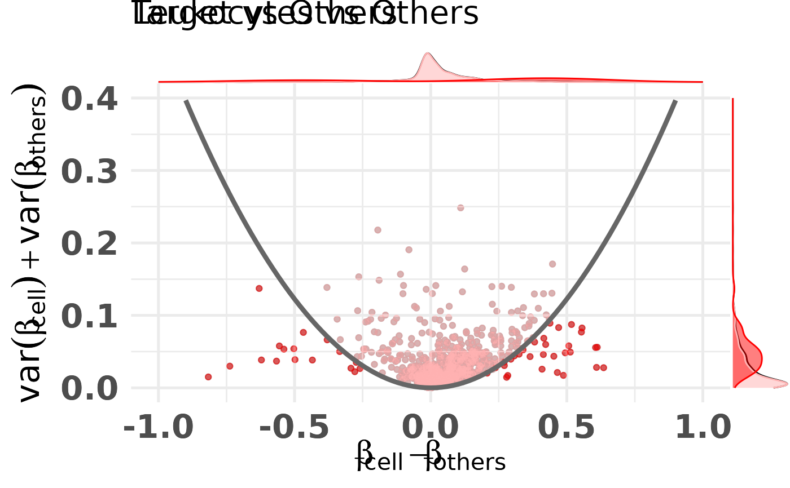

Represent CpGs in the difference in means, sum of variances space. This plot is often used to select CpGs that would be good classifiers. These CpGs are often located on the bottom left and bottom right of this plot.
Source:R/plot.R
diffmeans_sumvariance_plot.RdRepresent CpGs in the difference in means, sum of variances space. This plot is often used to select CpGs that would be good classifiers. These CpGs are often located on the bottom left and bottom right of this plot.
Usage
diffmeans_sumvariance_plot(
data,
xcol = "diff_means",
ycol = "sum_variance",
feature_id_col = "id",
is_feature_selected_col = NULL,
label_var1 = "Target",
label_var2 = "Others",
target_vector = NULL,
mean_cutoff = NULL,
var_cutoff = NULL,
threshold_func = NULL,
func_factor = NULL,
feats_to_highlight = NULL,
cpg_ranking_df = NULL,
color_all_points = NULL,
pltDensity = TRUE,
density_type = c("density", "histogram", "boxplot", "violin", "densigram"),
plot_dir = NULL,
id_tag = NULL,
file_tag = NULL,
custom_mods = FALSE
)Arguments
- data
Data to create difference in means, sum of variances plot. Either a data.frame with `xcol`,`ycol` and `feature_id_col` or, if `target_vector` is not `NULL` a matrix with beta values from which, given the target, the difference in means between the target and others, and the sum of variances within the target and others will be calculated.
- xcol
Column with x-axis data
- ycol
Column with y-axis data
- feature_id_col
Column with the feature ID
- is_feature_selected_col
NULL or column with TRUE/FALSE for features which should be highlighted as selected
- label_var1
Label of the target class
- label_var2
Label of the other classes
- target_vector
if not NULL a vector target class assignment, see data
- mean_cutoff
a numeric draw mean cutoff at given position
- var_cutoff
a numeric draw variance cutoff at given position
- threshold_func
TODO
- func_factor
TODO
- feats_to_highlight
TODO
- cpg_ranking_df
TODO
- color_all_points
TODO
- pltDensity
TODO
- density_type
TODO
- plot_dir
TODO
- id_tag
TODO
- file_tag
TODO
- custom_mods
TODO
Examples
library("CimpleG")
# read data
data(train_data)
data(train_targets)
# make basic plot
plt <- diffmeans_sumvariance_plot(
train_data,
target_vector = train_targets$blood_cells == 1
)
print(plt)
# make plot with parabola, colored and highlighted features
df_dmeansvar <- compute_diffmeans_sumvar(
train_data,
target_vector = train_targets$blood_cells==1
)
parab_param <- .7
df_dmeansvar$is_selected <- select_features(
x = df_dmeansvar$diff_means,
y = df_dmeansvar$sum_variance,
a = parab_param
)
plt <- diffmeans_sumvariance_plot(
data=df_dmeansvar,
label_var1="Leukocytes",
color_all_points="red",
is_feature_selected_col="is_selected",
feats_to_highlight=c("cg10456121"),
threshold_func=function(x,a) (a*x)^2,
func_factor=parab_param
)
#> Warning: Use of `sp_df$x` is discouraged.
#> ℹ Use `x` instead.
#> Warning: Use of `sp_df$x` is discouraged.
#> ℹ Use `x` instead.
#> Warning: Removed 10 rows containing missing values (`geom_line()`).
#> Warning: Removed 1 rows containing missing values (`geom_label()`).
#> Warning: Removed 1 rows containing missing values (`geom_label_repel()`).
#> Warning: Use of `sp_df$x` is discouraged.
#> ℹ Use `x` instead.
#> Warning: Removed 10 rows containing missing values (`geom_line()`).
#> Warning: Removed 1 rows containing missing values (`geom_label()`).
#> Warning: Removed 1 rows containing missing values (`geom_label_repel()`).
#> Warning: Use of `sp_df$x` is discouraged.
#> ℹ Use `x` instead.
#> Warning: Use of `sp_df$x` is discouraged.
#> ℹ Use `x` instead.
#> Warning: Removed 10 rows containing missing values (`geom_line()`).
#> Warning: Removed 1 rows containing missing values (`geom_label_repel()`).
#> Warning: Use of `sp_df$x` is discouraged.
#> ℹ Use `x` instead.
#> Warning: Removed 10 rows containing missing values (`geom_line()`).
#> Warning: Removed 1 rows containing missing values (`geom_label_repel()`).
print(plt)
